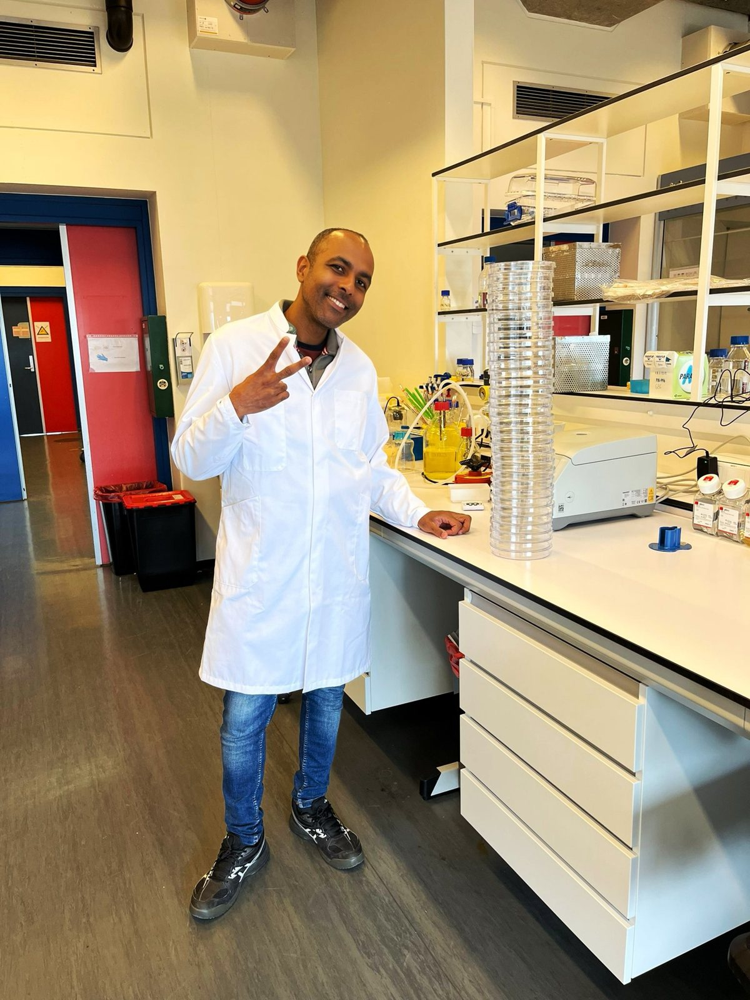
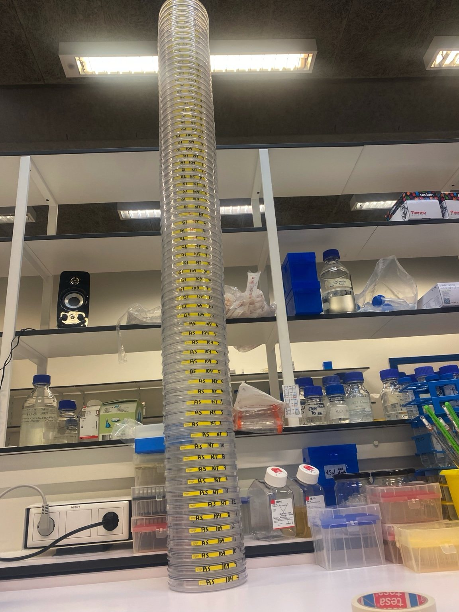
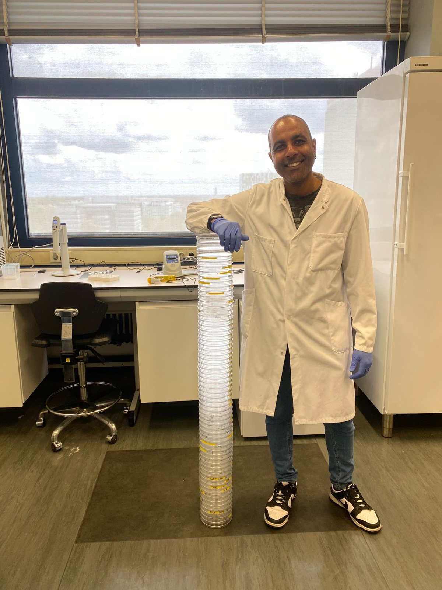
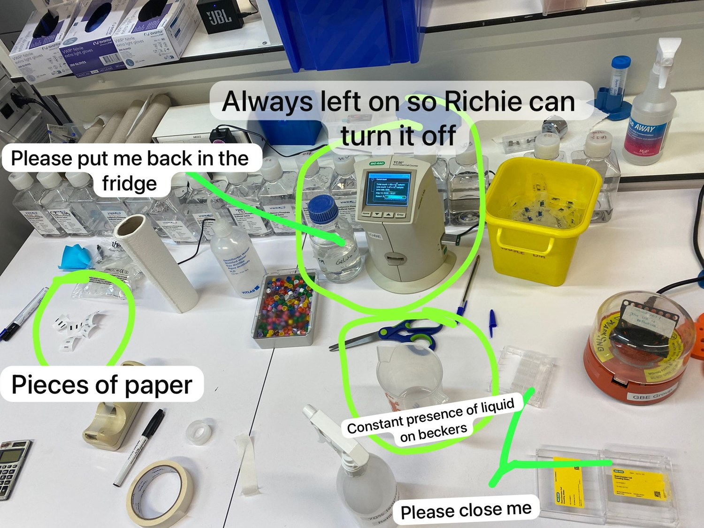

X-Omics Festival · Nijmegen · 2025
The science behind chromatin readers
A recorded scientific talk on engineered probes and protein interactions at chromatin marks.
Watch on YouTube ↗Science communication
I enjoy talking about how research works, what we learn from it and why it matters. Here are a few recorded talks, videos and stories about my research.
Watch & listen
X-Omics Festival · Nijmegen · 2025
A recorded scientific talk on engineered probes and protein interactions at chromatin marks.
Watch on YouTube ↗
NTR · Dutch public broadcasting · 2025
A short public-facing video about the fluorescent DNA damage sensor.
Watch on YouTube ↗
Research video · YouTube
A third video shared for this website. The exact title can be added once confirmed.
Watch on YouTube ↗In the news
Selected institutional stories and independent coverage of work I have contributed to. Some older sources may change their web addresses.
Behind the scenes
Most research happens between the big announcements: growing cells, testing ideas, checking controls and occasionally taking a photo of a very tall pile of culture dishes.



